투혼 MTS 도움말
실시간 인기조회
지금 모두가
주목하는 종목,
한눈에 포착하세요!
💭 "무슨 종목을 봐야 할지 모르겠어요"
라는 고민 많으시죠?
📊 시세와 투자정보 메뉴에선 지금 가장
🔥 주목받는 종목을 한눈에 보여주니까,
⏰ 시장 흐름을 놓치지 않도록 도와줘요!
실시간 인기조회
💡 어떤 종목이 지금 인기 있는지 궁금할 때!
📈 실시간 인기조회로 투자자들이 가장 많이 찾는
종목을 한눈에 확인할 수 있어요.
- 트레이딩
- 국내주식
- 시세/투자정보
- 실시간 인기조회
화면소개
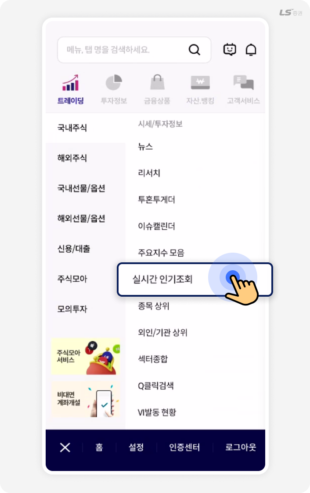
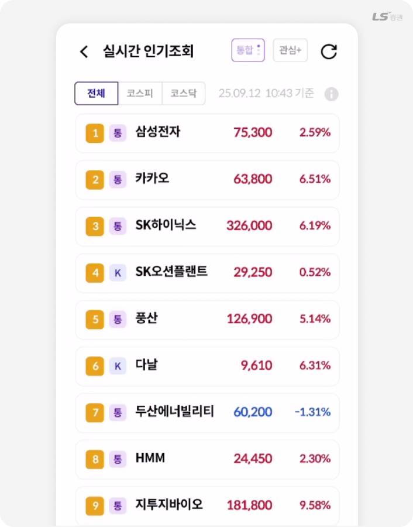
‘실시간 인기조회’는 투자자들이 가장 많이 조회한 종목을 보여주는 메뉴예요.
코스피·코스닥 시장을 구분해 인기 종목을 한눈에 확인할 수 있으며, 현재 시장에서 주목받는 기업과 상승세 종목을 빠르게 파악할 수 있어요.
시장 흐름을 놓치지 않고 투자 타이밍을 잡는 데 유용한 화면이에요.
종목상위
🔥 오늘 뜨는 종목, 지금 바로 확인하세요!
상승률부터 거래량까지, 오늘 시장에서
가장 활발한 종목들을 한눈에 볼 수 있어요.
요즘 투자자들이 주목하는
종목 흐름을 빠르게 캐치해 보세요.
- 트레이딩
- 국내주식
- 시세/투자정보
- 종목상위
화면소개
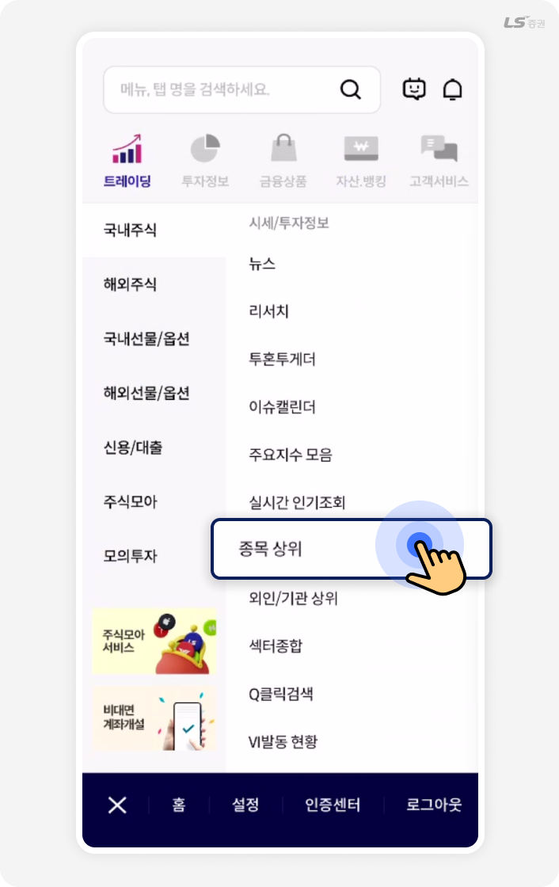
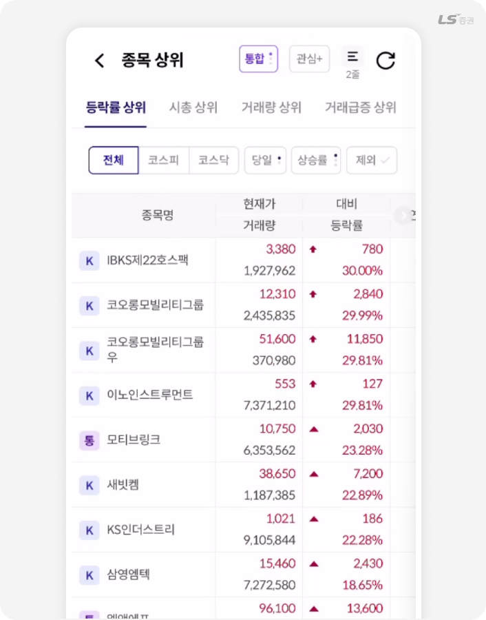
‘종목 상위’는 시장의 흐름을 빠르게 읽고 싶을 때 활용하기 좋은 화면이에요.
단기간 급등주를 찾거나, 거래량이 몰리는 종목을 분석할 때 특히 유용하며 투자 타이밍을 잡거나 관심종목을 선정할 때 참고하기 좋아요.
외인/기관 상위
🌍 외국인·기관이 집중 매수하는 종목,
지금 확인하세요! 누가 어떤 종목을 사고파는지
흐름을 실시간으로 파악할 수 있어요.
큰손들의 움직임을 따라
시장 방향을 예측해 보세요.
- 트레이딩
- 국내주식
- 시세/투자정보
- 외인/기관 상위
화면소개
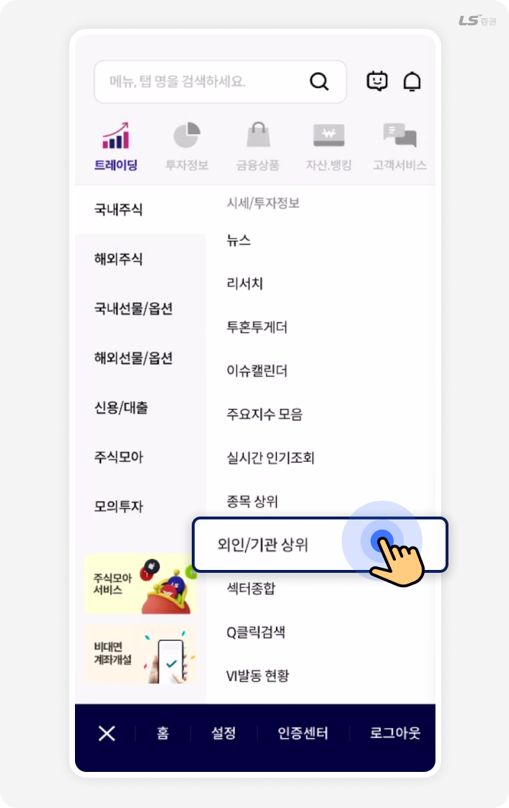
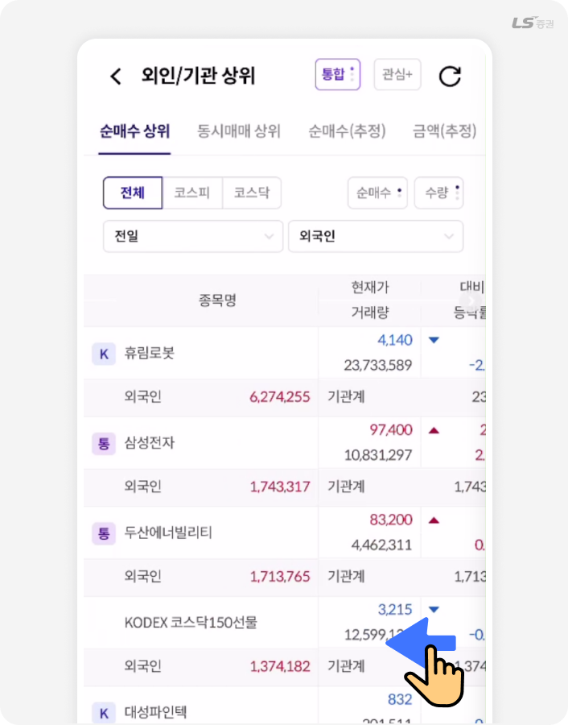
‘외인/기관 상위’는 외국인과 기관의 순매수·순매도 현황을 보여주는 기능이에요.
시장에 큰 영향을 미치는 주요 투자자의 거래 동향을 확인할 수 있어 수급 흐름을 참고하거나 매매 전략을 세울 때 유용해요.
VI발동현황
⚡ 급등·급락 종목 실시간 포착!
VI(변동성 완화장치)가 발동된 종목을
실시간으로 확인할 수 있어요.
급격한 가격 변동 종목을 빠르게 파악해
시장 리스크를 줄이세요.
- 트레이딩
- 국내주식
- 시세/투자정보
- VI발동현황
화면소개
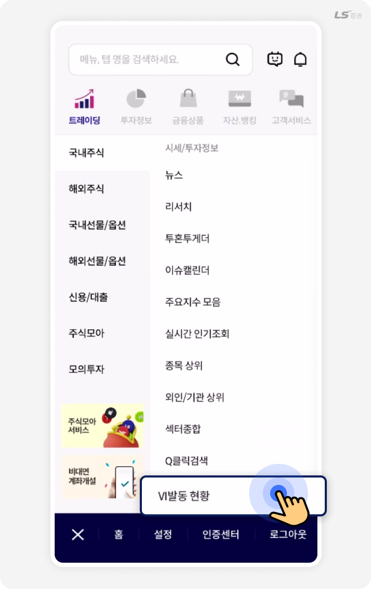
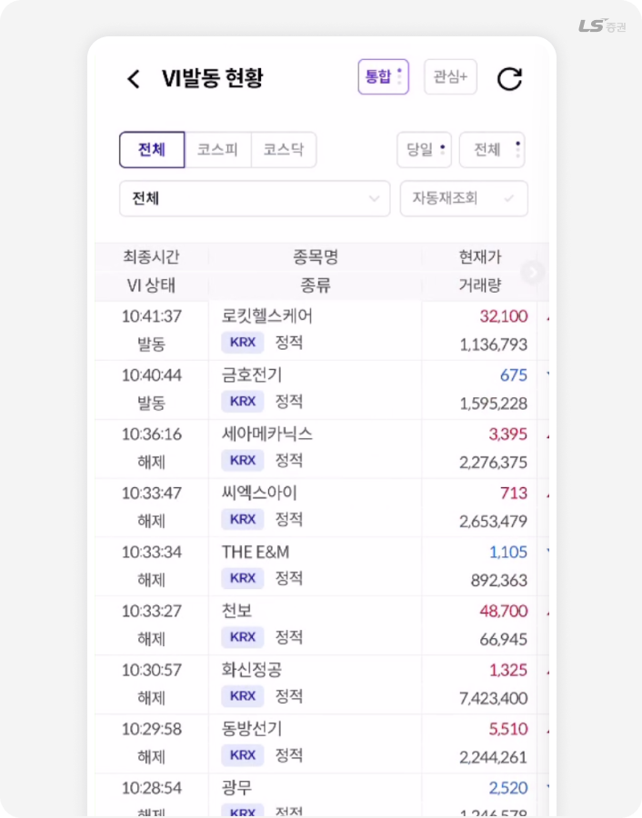
‘VI 발동 현황’은 가격이 급등하거나 급락할 때 일시적으로 거래를 멈추는 변동성 완화장치(VI)가 발동된 종목을 보여주는 기능이에요.
시장 급변 시 투자 위험을 미리 감지하거나 단기 매매 기회를 포착할 때 활용하기 좋아요.
시장조치
⚠️ 관리·불성실 종목, 미리 확인하세요!
투자 전 위험 종목을 빠르게 파악해
불필요한 손실을 예방할 수 있어요.
시장 조치 현황을 실시간으로 확인하며
안정적인 투자를 도와줘요!
- 트레이딩
- 국내주식
- 시세/투자정보
- 시장조치
화면소개
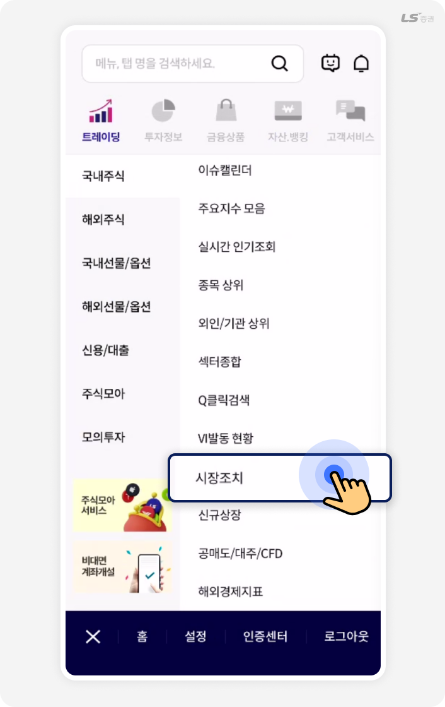
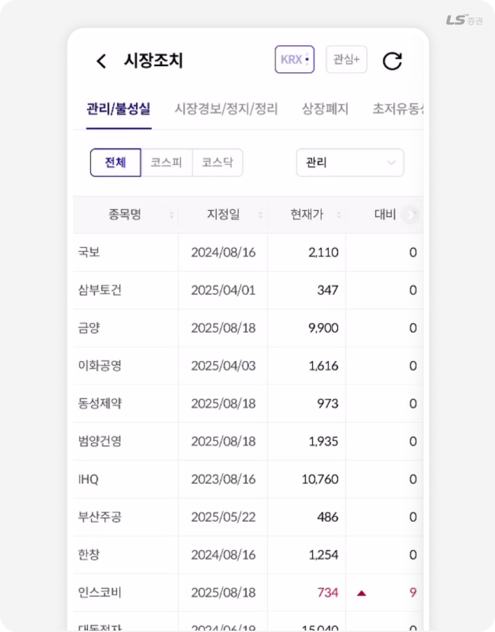
‘시장조치’ 메뉴는 관리종목, 불성실공시 기업, 상장폐지 예정 종목 등 거래 주의가 필요한 종목 정보를 제공하는 기능이에요. 투자 전 리스크를 미리 확인하고, 안전한 매매 결정을 내릴 때 유용해요.
신규상장
📈 새롭게 상장된 종목 한눈에!
최근 상장된 기업과 ETF를 한눈에 확인할 수
있어요. 시장에 새로 진입한 종목의 흐름을
빠르게 파악해 투자 기회를 잡아보세요.
- 트레이딩
- 국내주식
- 시세/투자정보
- 신규상장
화면소개
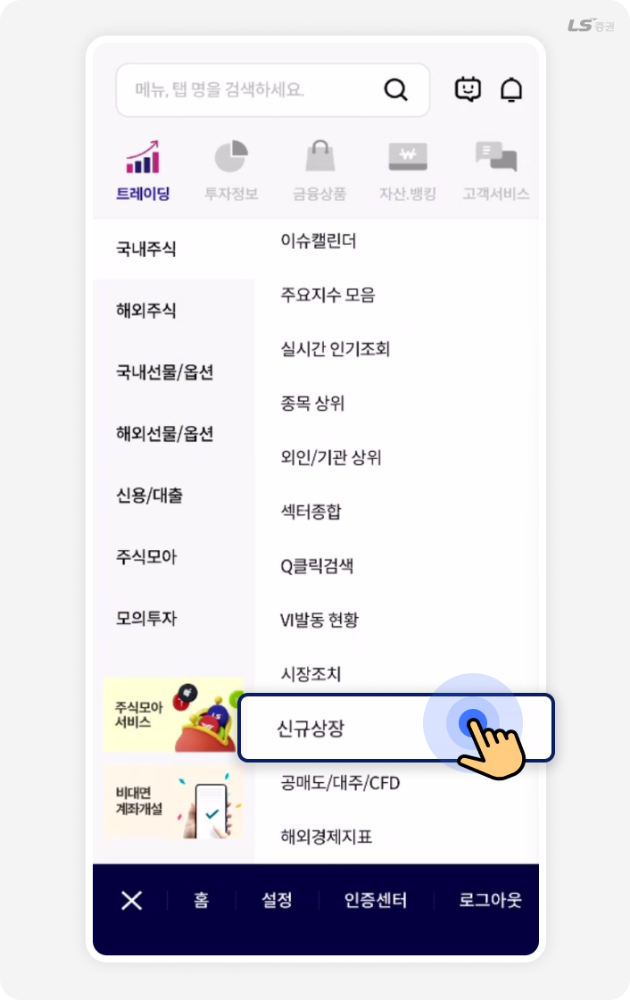
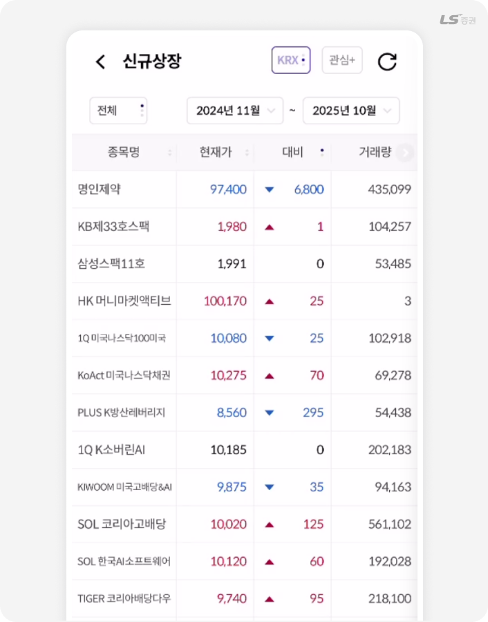
‘신규상장’ 메뉴는 최근 증시에 새로 상장된 종목들의 가격과 거래 현황을 보여주는 기능이에요.
기업공개(IPO) 이후 주가 흐름을 살피거나, 시장의 신규 트렌드를 확인할 때 유용해요. 특히 신규 투자 기회를 찾는 투자자에게 꼭 필요한 정보 화면이에요.
공매도/대주/CFD
📊 공매도·대주·CFD 현황을 한눈에!
공매도 잔량과 대주 가능 종목을 실시간으로
확인해 투자 전략을 세워보세요. 수급 흐름을
빠르게 파악하면 시장 심리를 읽는 데 도움이 돼요.
- 트레이딩
- 국내주식
- 시세/투자정보
- 공매도/대주/CFD
화면소개
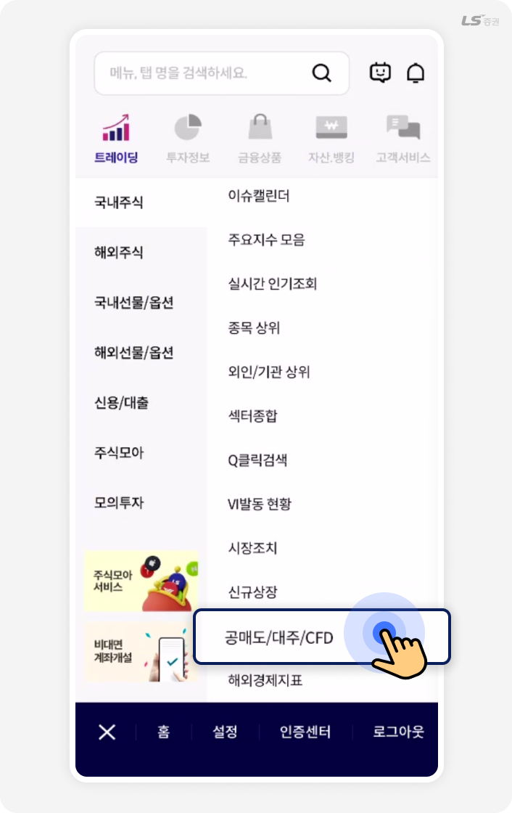
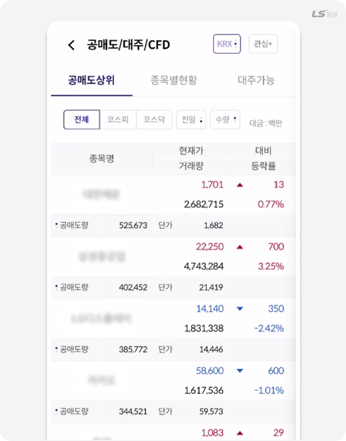
‘공매도/대주/CFD’ 메뉴는 공매도 잔량, 대주 가능 수량, CFD(차액결제거래) 종목 정보를 제공해요.
공매도 증가나 대주 물량 부족은 투자 심리 변화의 신호로 활용할 수 있어요. 특히 단기 수급 동향이나 종목 과열 여부를 확인할 때 유용한 화면이에요.
섹터종합
📊 섹터별 시장 흐름을 한눈에!
지금 뜨는 산업군이 어디인지, 어떤 섹터가
강세인지 바로 확인해보세요.
섹터별 등락률과 주요 종목을 함께 보여줘
시장 트렌드를 쉽게 파악할 수 있어요.
- 트레이딩
- 국내주식
- 시세/투자정보
- 섹터종합
화면소개
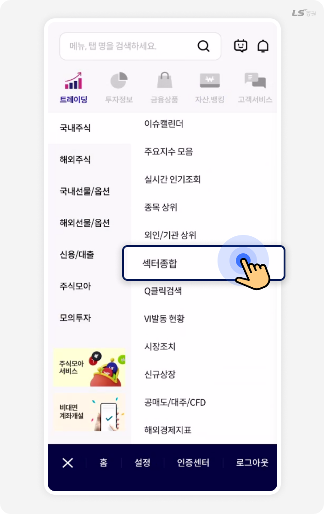
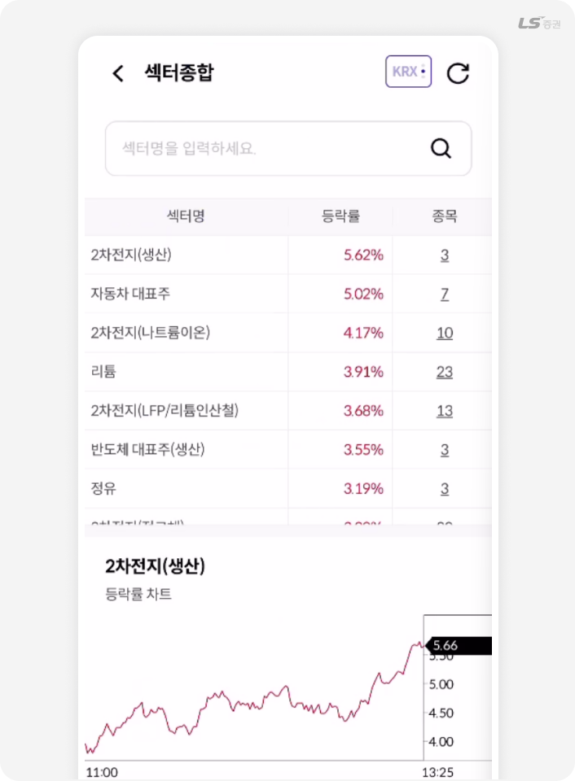
‘섹터종합’은 산업·테마별 주가 흐름을 비교해 시장의 전반적인 방향성을 읽을 수 있는 기능이에요.
2차전지, 반도체, 자동차 등 주요 섹터별 강세 흐름을 한눈에 볼 수 있어 단기 투자 타이밍이나 관심 종목 발굴에 유용하게 활용돼요.